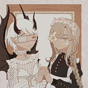
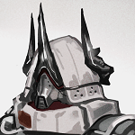

summer snow
works and projects
The following is an approximately cohesive list of projects I am presently working on or have developed prior.
active projects
| Title | Info |
 Fate/Rebirth Fate/Rebirth
|
A Fate/ franchise fan project featuring Kids with Attitude™ in a magical city, contending with their very own Holy Grail War. It’s way more convoluted and wild that it sounds. Has an invite-only wiki that could really use some love from yours truly. If you want to have access, check the front page’s instructions, then holler your details over at my guestbook! There’s also a presently-inactive quotebot running on Twitter. |
roleplay accounts
Twitter roleplay accounts I operate! For more information, consult my muse directory.
| Username | Info |
|
 KAMIKAKWSHI |
LINK:
@KAMIKAKWSHI
on Twitter if two oddities were forced to stay together, would that be fucked up or what? —Gentlemen, I think it’s time to allow “humanity” and “volition” to become objects of ambiguity. Project Taivaaseen, an auxiliary member of Chaldea’s A-Team, and Alter Ego-class Servant, Subject #8291. They are among of Chaldea Security Organization’s strangest employees—if you can call them that. ...Also, it goes without saying, but they have an incredibly complicated relationship. |
|
K4IRIKIRANSHIN |
LINK:
@K4IRIKIRANSHIN
on Twitter the premise—a broken woman who significant of trauma as a child. unable to flee the past, she now unleashes her madness through art, the monstrous pursuit of beauty. the truth—？？？ Kotori Sidorova is the technician and designer behind Chaldea’s simulations. Yeah, remember that simulation they go to during the interludes? She crafts a whole bunch of those. Her ass can’t explain her own code, though. Weird. |
|
ERGOTHYSTERIA |
LINK:
@ERGOTHYSTERIA
on Twitter yes it was plain to see / yes it was meant to be / written in the stars An alternate continuity Abigail Williams from Fate/Grand Order. Has elements of Fate/ReBirth, the original Dunwich Horror story by Lovecraft, and references to the historical witch trials. Yes, a canon character and I decided to run an AU of her. LMAO. Please note that she has not experienced the events of the Salem Pseudo-Singularity and as a result does not have identical powers to canon Abby. |
|
BAI3YPROOF |
LINK:
@BAI3YPROOF
on Twitter “road work ahead?! uh, yeah, i sure HOPE it does!” Chaldea’s Safety Officer. (Basically imagine the guy who makes sure OSHA doesn’t haul ass.) Super high-strung. Also a de-facto anti-magus assassin wielding the Walking Curse “Humboldt’. Have I mentioned she’s only 10 years old and sees humans as animals, not in a weird superiority complex way but in an Odd Taxi way? The plot |
|
 TIYOTOKOS_ |
LINK:
@TIYOTOKOS_
on Twitter ...to have a share of the earth and the unfruitful sea. she received honour also in starry heaven, and is honoured by the deathless gods... Servant Hecate, class unknown. Has some kind of connection to an incarnation of All The World's Evil. Very tall. Very imposing. |